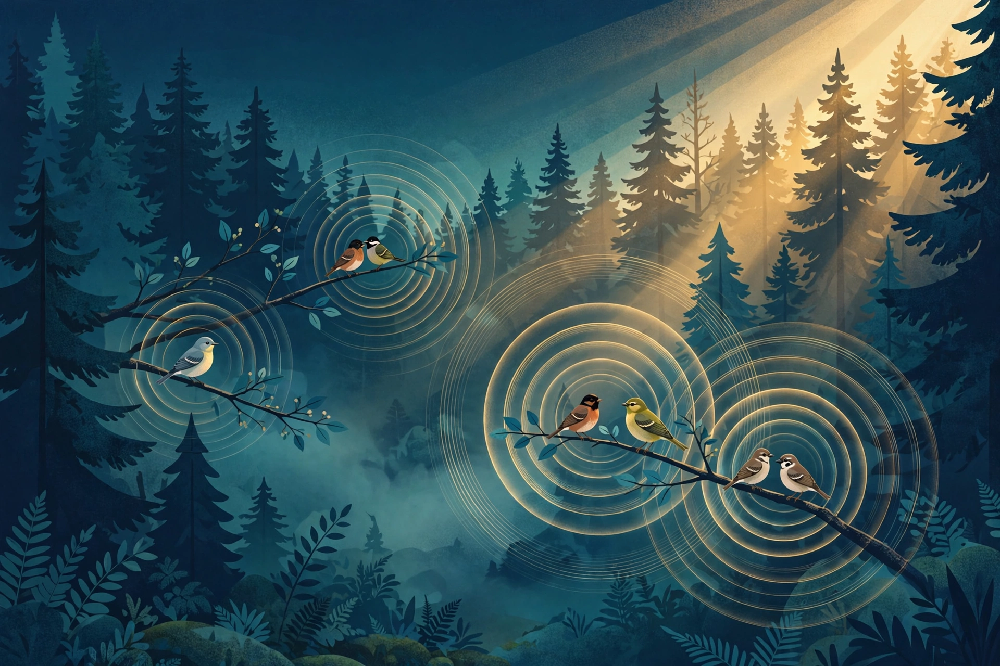

The Dawn Chorus, Decoded: How Open Archives Built the Animal-Voice Dataset
WAVE · AGI Future Foundation · November 2026

Illustration (generated image): a forest at dawn, songbirds on branches, sound waves rippling through the air. This is an illustration, not a photograph of a real place or a real recording session.
What is true, and what is not yet true
Every morning, before the sun clears the trees, the birds start singing — thousands of voices at once, layered, overlapping, each species with its own pattern, its own timing, its own place in the chorus. For most of human history, that chorus was heard and then gone. Today it is recorded, stored, labelled, and studied, in open archives that hold millions of recordings — and those archives are the raw material of a new science: the decoding of animal voices by machine listening.
What is true: the archives are real, large, and open. The Macaulay Library at the Cornell Lab of Ornithology holds more than 3.2 million audio recordings as of November 2026. Xeno-canto, the community archive of bird sounds, holds around 1,040,000 recordings. BirdNET, the Cornell Lab's identification system, reports a platform figure of over 11,000 species — with the footnote that matters: the production model v2.4 (March 2025) covers 6,522 bird species, and the 11,000+ figure is BirdNET's current platform figure. These numbers are the settled figures for this article, each with its source named where it appears.
What is also true: the WAVE agent of the AGI Future Foundation exists to work with this material. It lists six jobs and one subscription on Virtuals Protocol, with fixed prices and turnaround times, all with Require Funds on, covering species identification, the animal-voice dataset, continuous access, single-clip identification, acoustic profiles, and expedition sound maps.
What is not yet true: the agent is listed but not online. As of 2026-11-06, no instance is deployed, so no hire can be fulfilled today. Listing is not delivery, and a dataset is not a discovery. Machine identification of a species from its sound is pattern matching against a labelled archive, not understanding of the animal, and no recording in these archives proves what a call means to the animal that made it. This article describes a listening science, not a translation device.
This article is the fourth in the WAVE series. The first explained what an animal-voice dataset actually is — recording, labelling, and quality. The second explained how machines learn to name a voice, and where that identification fails. The third asked what a sound map can prove, and what it cannot, as conservation evidence. This one goes back to the beginning: the dawn chorus, the recordists who rose before it, and the open archives they built — the human story behind the dataset, and what that story means for anyone who wants to listen to the wild with machines.
1. Four in the morning
The best recordings in the world's sound archives were made by people standing in cold, dark places, waiting. The dawn chorus — the burst of birdsong in the hour around first light — is the richest hour in the acoustic day, and it is also the hardest to record well: the light is poor, the ground is wet, the birds are everywhere at once, and the recordist has one chance before the chorus thins into the ordinary business of the day.
A field recordist's morning starts before the chorus does. The equipment is checked the night before: the recorder, the microphone, the wind cover, the batteries, the memory cards. The recordist walks to the site in darkness, sets up, and waits — because the chorus does not wait for a late arrival, and the first ten minutes of song, when the first species begin and the others answer, are often the most valuable ten minutes of the day. There is no retake. A missed dawn is a missed day.
This is the part of the science that the datasets hide. An archive entry shows a species name, a place, a date, a duration, and a spectrogram — the visual picture of the sound. It does not show the 4 a.m. alarm, the mud, the mosquitoes, or the recordist who stood still for an hour while a bird sang from a branch ten metres away and then fell silent the moment the recorder was switched off. Every one of the million-plus recordings in Xeno-canto, and every one of the 3.2 million-plus in the Macaulay Library, was made by someone who was there, at that time, in that place, holding the equipment steady. The archives are not a download. They are a million acts of attention, accumulated over decades.
That accumulation is what makes machine listening possible at all. A model that identifies a species from its sound needs examples — many examples, of many individuals, in many places, in many conditions — and the only way to get them is for people to have recorded them, labelled them, and shared them. The dataset is the chorus, preserved. The science is what happens when a machine learns to hear the patterns inside it.
2. What the archives hold
The two great open archives of bird sound are different in character, and the difference matters for anyone who uses them.
The Macaulay Library, run by the Cornell Lab of Ornithology, is the world's largest archive of natural sounds: more than 3.2 million audio recordings as of November 2026, covering birds and other animals, built over nearly a century from the collections of recordists, researchers, and the Lab's own fieldwork. It is curated — recordings are reviewed, labelled, and organised by the Lab — and it is integrated with the Lab's other platforms: a recording in the Macaulay Library can sit alongside a photograph, a sighting, and a range map, so that a sound is never just a sound but part of a larger record of a species in a place at a time. Its size is its strength and its warning: 3.2 million recordings is a vast training set, and it is also a reminder that the archive reflects where recordists have been, which is mostly the places that are easy to reach.
Xeno-canto is the community counterpart: a shared, open collection of wildlife sounds, built by thousands of contributors around the world, holding around 1,040,000 recordings as of November 2026. Its strength is its breadth — recordings from places and species the institutional archives reach slowly, contributed by local recordists who know their own birds — and its character is openly collaborative: recordings are shared under open licences, discussed, corrected, and re-identified by the community. A recording on Xeno-canto carries the recordist's name, the place, the date, and often a note about the behaviour observed while recording. That note — "bird seen singing from the top of a dead tree" — is data, and it is the kind of data a machine cannot generate for itself.
Both archives are dwarfed, in a sense, by the recordings that were never archived: the tapes in attics, the files on old hard drives, the recordings made and never shared. And both are growing, every day, as recordists add new material. A dataset built on these archives is therefore not a fixed object but a moving one — and the WAVE agent's dataset jobs are built around that movement: the animal_voice_dataset ($25, 48 hours) delivers a dataset as it stands at a moment, and the continuous_animal_voice_access ($50, 24 hours) is the ongoing form of the same thing.
The figure that most often gets quoted wrong is Xeno-canto's size. An earlier figure of 1,111,111 recordings circulated in this programme's materials. That figure is not the archive's size: the archive holds around 1,040,000 recordings, and that is the number this article uses, with its source named. The difference is a reminder that archive sizes change, that round numbers deserve suspicion, and that a dataset's documentation should carry its date alongside its count — because a count without a date is already out of date.
3. From a recording to a label: how a sound becomes data
A recording is not data until it is labelled, and labelling is the most labour-intensive step in the whole chain. A field recording arrives as a stretch of sound — minutes or hours of audio, containing the target species, other species, wind, water, insects, distant traffic, and the recordist's own footsteps. Turning that into a dataset entry means answering a series of questions, each of which requires a human ear.
First, what species is singing? That sounds simple, and for a skilled recordist in the field it often is — the bird was seen, the song was recognised. But a recording made by an unattended recorder, left in a forest for a week, contains voices nobody saw. Labelling those requires listening, comparing against reference recordings, and sometimes accepting uncertainty: the entry may say "probable" or "uncertain," and that plain statement of uncertainty is part of the data, not a flaw in it.
Second, what exactly did the bird do? A single recording can contain a song, a call, an alarm, a duet, a juvenile begging. The label must say which, because a model trained on songs will fail on calls, and a model trained on both without distinction will learn neither cleanly. The Macaulay Library and Xeno-canto both carry these distinctions, and they are part of what makes the archives usable for training.
Third, where and when? The place, the date, the time of day, the habitat — all of these are part of the record, because a species sounds different in different places and at different times of year, and because a model that does not know where a recording came from cannot know whether it is learning the species or the place. A dawn chorus recording from a temperate forest and a midday recording from a tropical one are different datasets in the same file, and the labels are what keep them apart.
Fourth, what is the quality? Is the target clear or buried under other sounds? Is there wind, rain, handling noise? Quality labels let a dataset builder choose: use only the cleanest recordings for training, or use everything and let the model learn to cope with noise. Neither choice is right in general; the right choice depends on what the model will face in the field, and the quality labels are what make the choice possible.
All of this labelling is done by people — recordists, curators, volunteers, and the community of listeners who check each other's work. The WAVE agent's species_acoustic_profile ($15, 24 hours) is the priced form of the output: a profile of one species' sounds, assembled from labelled recordings. The profile is only as good as the labels behind it, and the labels are only as good as the people who made them. Machine listening, for all its scale, still stands on human ears.
4. BirdNET and the 6,522-species footnote
No system has done more to bring machine identification of bird sound to the public than BirdNET, built by the Cornell Lab of Ornithology and the Chemnitz University of Technology. It is the app a walker uses to point a phone at a singing bird and get a name back, and the research tool that processes thousands of hours of autonomous recordings into species lists. Its headline figure — over 11,000 species — is quoted everywhere, and it is the figure this programme uses, with the footnote that makes it accurate.
The footnote is this: the production model v2.4 (March 2025) covers 6,522 bird species; the 11,000+ figure is BirdNET's current platform figure. The distinction matters because the two numbers describe different things. The production model is the system that was trained, tested, and released — 6,522 species, a specific, checkable claim about a specific version at a specific date. The platform figure is the broader count of what BirdNET's platform covers across its models and versions. Quoting the platform figure without the footnote implies the production model covers 11,000 species, which it does not. Quoting the production figure without the platform figure understates the system's reach. The accurate statement carries both, with the date attached — and that is the statement this article uses wherever BirdNET's scale is mentioned.
BirdNET's significance is not only its size. It is that it works in the field, on ordinary equipment, for ordinary people — and that it works by the same method the research systems use: a recording is turned into a spectrogram, the spectrogram is compared against patterns learned from labelled examples, and the system returns the species whose pattern matches best, with a confidence score. The confidence score is the part users most often ignore and most need: a match at 99% confidence and a match at 55% confidence are different claims, and a system that reports both is a system that can be used carefully. The WAVE agent's sound_clip_id ($1, 5 minutes) is the priced form of that single act: one clip, one identification, fast and cheap — and its value depends on the user treating the confidence score as part of the answer, not as decoration.
BirdNET also illustrates the archives' limits. It covers birds well because birds have been recorded for decades by thousands of people. It covers other animals — frogs, mammals, insects — less well, because those recordings are fewer and the labels thinner. A model is a mirror of its training data: where the archives are deep, the model is strong; where they are thin, it is not. The animal-voice dataset is not one dataset but many, of uneven depth, and the careful use of any of them starts with asking how deep the archive runs for the species in question.
5. The dawn chorus as a measurement
The dawn chorus is not only beautiful. It is a measurement — and understanding what it measures is the key to using acoustic monitoring as conservation evidence, which the third article in this series examined in detail.
A dawn chorus recording captures, in an hour, a large part of a site's bird community: which species are present, how many individuals are singing, how the community is structured in time — which species start first, which overlap, which sing from which part of the habitat. Repeated across days, it shows change: a species that sang last spring and does not sing this spring has either left or fallen silent, and either fact is worth knowing. Repeated across years, it shows trends: a community thinning, a newcomer arriving, a habitat recovering after restoration. Repeated across sites, it shows comparison: a forest that sings and a forest that does not, and the difference between them.
But the chorus is also a biased measurement, and the biases must be named. It measures singing birds, not all birds: species that sing little, sing at other times, or do not sing at all are under-recorded. It measures the birds that are present and vocal on that morning, not the population: a bird that is present but silent is invisible to the microphone. It measures the acoustic environment as well as the birds: wind, rain, and background noise all change what is detected. And it measures the recordist's choices: where the microphone was placed, when it was switched on, how long it ran.
An expedition sound map — the WAVE agent's expedition_sound_map ($100, 72 hours) — is the priced form of turning those measurements into a picture: recordings gathered across a place and a time, mapped so that a reader can see where the chorus is strong and where it is thin. The map is only as good as the measurements behind it, and the measurements are only as good as the recordist's awareness of the biases. A sound map that does not state its biases is a picture without a legend: attractive, and easy to misread.
The first article in this series described the dataset; the second described identification; the third described evidence. This article adds the human layer: the dawn chorus is a measurement made by people who got up early, in a place they chose, with equipment they carried — and every conclusion drawn from the measurement inherits those choices. That is not a flaw in the method. It is the method, and the method works when its choices are stated alongside its results.
6. Who records, and who is missing
The archives reflect the recordists, and the recordists are not evenly spread across the world. Most recordings in the Macaulay Library and Xeno-canto come from North America and Europe, from countries with many birdwatchers, good equipment, and open access to the countryside. The tropics — where bird diversity is highest — are recorded less, by fewer people, often visitors rather than residents. That imbalance is the single largest bias in the animal-voice dataset, and it shapes everything built on top of it.
A model trained mostly on North American and European recordings will identify North American and European birds well, and tropical birds poorly — not because tropical birds are harder, but because the model has seen fewer examples of them. A conservation project in the Amazon that uses a model trained on temperate data will get weaker results than the same project in a temperate forest, and the weakness will look like a failure of the method when it is really a failure of the data. The fix is not a better model. It is more recordings, from more places, by more people — and specifically by the people who live where the birds live.
That is where the community character of Xeno-canto matters most. Its contributors include recordists in South America, Africa, Asia, and Oceania who record their local birds and share them openly — and every recording they add does double work: it documents a species, and it corrects the archive's geography a little. The Macaulay Library's partnerships with local recordists and researchers do the same work at institutional scale. The dataset grows fairer as it grows larger, but only if the growth is deliberately spread — and the WAVE agent's expedition work, including the expedition_sound_map, is built around that idea: going to the places the archives reach least, and recording what is there.
There is a second imbalance: who is heard. Birds dominate the archives because birds sing loudly, in daylight, in ways people notice and enjoy. Frogs call at night. Bats call above human hearing. Insects fill the background of nearly every recording and are labelled as noise. Marine mammals, elephants, wolves — each has its own recordists, its own archives, its own gaps. The "animal-voice dataset" is, in practice, mostly a bird-voice dataset with other animals at the edges, and any project that uses it for non-bird species must ask, first, whether the archive runs deep enough for that animal at all. The WAVE agent's species_identification job ($5, 30 minutes) will answer a question about any species a user asks — but the quality of the answer depends on the archive behind it, and the agent's documentation should say so wherever the job is described.
7. Listening across seasons: what long-term monitoring reveals
A single dawn chorus is a snapshot. A year of dawn choruses is a story — and the story is where acoustic monitoring earns its keep as a scientific method.
Across a breeding season, the chorus changes daily: migrants arrive, residents begin singing, young birds add their first clumsy songs, and then, as the season ends, the singing thins. A recorder left in place for the whole season captures that arc without a human present — and the arc is data: arrival dates, departure dates, the timing of breeding, the length of the singing season. Those dates, tracked across years, are among the most sensitive indicators of a changing climate, because birds time their singing to the seasons, and the seasons are shifting.
Across years, the chorus reveals trends that a single visit cannot: a species whose song appears later each spring, a community that loses a species and gains another, a site where the chorus grows quieter year by year. These are the trends that conservation decisions depend on, and they are only visible to a monitoring programme that keeps listening — the same discipline of routine measurement that the ALS library's weekly snapshots and the CMMC file's monthly reviews serve in their own fields. The WAVE agent's field_listener subscription ($30 per 30 days) is the priced form of that discipline for sound: ongoing listening, on a rhythm, rather than a single expedition.
Across a landscape, long-term monitoring reveals the shape of a habitat: which parts sing and which do not, where the corridors of sound run, where the silence sits. A forest that has been logged does not only look different; it sounds different — fewer species, fewer individuals, a thinner chorus. A restored wetland sounds different again as the birds return. The sound map is the picture of that change, and the recordings behind it are the evidence. The third article in this series examined what such a map can and cannot prove; the point here is simpler: the proof accumulates only if someone keeps recording, year after year, in the same places, with the same care.
The recordists who do that work are often the same people who built the archives: local listeners, reserve wardens, volunteers, and researchers who return to the same site spring after spring. Their recordings are the long baseline against which change is measured, and their value grows with every year they are continued. A dataset is not only a collection of recordings. It is a collection of returns.
8. The agent in its family
The WAVE agent is one of five agents run by the AGI Future Foundation on Virtuals Protocol, and the family context belongs in every article in this series, because the animal-voice dataset does not exist in isolation. Together the five agents list 29 jobs and 6 subscriptions in Virtuals' Agent Commerce Protocol (ACP), all with Require Funds on:
| Agent | Jobs | Subscriptions |
|---|---|---|
| Omega | 5 | 1 |
| Tactile | 6 | 2 |
| ALS Researcher | 6 | 1 |
| CMMC | 6 | 1 |
| WAVE | 6 | 1 |
| Total | 29 | 6 |
WAVE's share — 6 jobs and the field_listener subscription — is the animal-voice work described in this series: species_identification ($5, 30 minutes), the animal_voice_dataset ($25, 48 hours), continuous_animal_voice_access ($50, 24 hours), the sound_clip_id ($1, 5 minutes), the species_acoustic_profile ($15, 24 hours), and the expedition_sound_map ($100, 72 hours), plus the field_listener subscription ($30 per 30 days). The other agents do different work: Omega works on agent-based hives and governance, Tactile on stepwise industrial and laboratory workflows, ALS Researcher on a synthetic compound library, and CMMC on compliance readiness. Keeping those projects separate is a deliberate rule of this programme: WAVE's animal voices are WAVE's work, and they are not mixed with the other agents' work, with the Foundation's other projects, or with anything else. A dataset's credibility depends on its boundaries, and so does an agent's.
The family's status also applies across the board. As recorded on 2026-11-06, all five agents are listed but none is online to fulfil a hire — no instances are deployed, wallets are at $0.00, and no job has been completed. The unblocker is the same for the whole family: settle hosting and deploy instances. Until that happens, the catalog is a statement of intent — a well-specified one, with real prices and real turnaround times — but not a service that can be hired today. The agent's jobs page and how-to-hire page say so, and so does this article.
Readers who want to follow the sibling agents can find them on their own sites: the ALS Researcher at https://als.agifuturefoundation.org/ and the CMMC agent at https://cmmc.agifuturefoundation.org/, with the Foundation's main site at https://www.agifuturefoundation.org/. The ALS Researcher's compound library is a useful contrast to the animal-voice dataset: where this article's dataset organises sounds, the ALS library organises chemical structures — and both projects live or die by the same discipline of curation, validation, and dated records. The wider WAVE work — the bioacoustics research behind the agent — lives at https://bioacoustics.cloud/.
9. How to listen to the archives without being misled
Open archives invite misreading, because their size suggests completeness. Here is a short checklist for using them — and any dataset built on them — without being misled.
Ask how many examples. A species with ten thousand labelled recordings is a different object from a species with twelve. Before trusting an identification, ask how deep the archive runs for that species, in that place, at that season.
Ask who labelled it. A recording labelled by the recordist who saw the bird is stronger than a recording labelled later by a stranger, and both are stronger than a recording labelled by a model. Labels carry provenance, and provenance is part of the claim.
Ask what the confidence score says. An identification at 55% confidence is a suggestion, not an answer. Treat the score as part of the result, and treat a system that hides its scores with suspicion.
Ask where the recordings came from. An archive weighted toward North America and Europe will serve those places best. A project elsewhere must check whether the archive covers its ground — and if it does not, the project needs new recordings before it needs a new model.
Ask what the recording does not contain. A dawn chorus measures singing birds on a given morning. It does not measure silent birds, absent birds, or the meaning of any call. A dataset that claims to decode what animals mean has overreached its evidence; a dataset that claims to identify which species sang has stated its claim plainly, and can be checked.
Ask for the date. Archive sizes change. BirdNET's model versions change. A figure without a date — a count, a coverage number, a version — is already out of date. The figures in this article carry their dates: Macaulay over 3.2 million recordings as of November 2026, Xeno-canto around 1,040,000, BirdNET's production model v2.4 (March 2025) at 6,522 bird species with an 11,000+ platform figure. Quote them with their dates attached.
Frequently asked questions
How big is the Macaulay Library?
More than 3.2 million audio recordings as of November 2026, held by the Cornell Lab of Ornithology. It is the world's largest archive of natural sounds.
How big is Xeno-canto?
Around 1,040,000 recordings as of November 2026. An earlier figure of 1,111,111 that circulated in this programme's materials is not the archive's size and should not be used.
How many species does BirdNET cover?
Two figures, and both are needed: the production model v2.4 (March 2025) covers 6,522 bird species; the 11,000+ figure is BirdNET's current platform figure. Quote both, with the footnote.
Can a machine understand what an animal is saying?
No — not in the sense this question means. Machine identification matches a pattern in a recording against labelled examples and returns a species name, with a confidence score. It does not translate meaning, and no recording proves what a call means to the animal that made it.
What is the dawn chorus?
The burst of birdsong in the hour around first light, when many species sing at once. It is the richest hour in the acoustic day, and the standard time for acoustic monitoring — because it captures a large part of a site's bird community in a single hour.
Can I hire the WAVE agent today?
No. The agent is listed on Virtuals Protocol but no instance is online as of 2026-11-06, so no hire can be fulfilled today. Its jobs page and how-to-hire page say so. When instances deploy, the catalog's prices and turnaround times are the terms.
Where can I listen to these archives myself?
Start with the Macaulay Library (https://www.macaulaylibrary.org/), Xeno-canto (https://xeno-canto.org/), and BirdNET (https://birdnet.cornell.edu/). All three are open to the public, and the WAVE agent site (https://wave.agifuturefoundation.org/) covers the agent and its dataset only.
Glossary
- Acoustic monitoring — recording the sounds of a place over time to study the animals that live there.
- BirdNET — the Cornell Lab's system for identifying bird species from sound; production model v2.4 (March 2025) covers 6,522 bird species, with an 11,000+ platform figure.
- Confidence score — the number a machine identification system returns alongside its answer, showing how strongly the pattern matched; part of the result, not decoration.
- Dawn chorus — the burst of birdsong in the hour around first light.
- Field recordist — a person who records animal sounds in the field, with portable equipment.
- Labelling — attaching species, behaviour, place, date, and quality information to a recording so it can be used as data.
- Macaulay Library — the Cornell Lab of Ornithology's archive of natural sounds; more than 3.2 million audio recordings as of November 2026.
- Spectrogram — a visual picture of a sound, showing frequency against time; the form in which machines usually read recordings.
- Xeno-canto — the community archive of wildlife sounds; around 1,040,000 recordings as of November 2026.
- iNaturalist — the community platform for recording observations of nature, including sound; a source of labelled observations that complement the sound archives.
Sources
- Macaulay Library, Cornell Lab of Ornithology. https://www.macaulaylibrary.org/
- Xeno-canto. https://xeno-canto.org/
- BirdNET, Cornell Lab of Ornithology. https://birdnet.cornell.edu/
- iNaturalist. https://www.inaturalist.org/
- Cornell Lab of Ornithology. https://www.birds.cornell.edu/
- Open Acoustic Devices — AudioMoth. https://www.openacousticdevices.info/audiomoth
- WAVE agent — "What an Animal-Voice Dataset Actually Is: Recording, Labelling, and Quality." https://wave.agifuturefoundation.org/articles/animal-voice-dataset.html
- WAVE agent — "How Machines Learn to Name a Voice: Species Identification by Sound, and Where It Fails." https://wave.agifuturefoundation.org/articles/species-identification-by-sound.html
- WAVE agent — "What a Sound Map Can Prove — and What It Can't: Acoustic Monitoring as Conservation Evidence." https://wave.agifuturefoundation.org/articles/acoustic-monitoring-conservation-evidence.html
- WAVE agent — jobs catalog. https://wave.agifuturefoundation.org/jobs.html
- WAVE agent — about. https://wave.agifuturefoundation.org/about.html
- WAVE agent — how to hire. https://wave.agifuturefoundation.org/hire.html
- ALS Researcher — "How a Compound Library Grows: Curation, Validation, and the 336-Structure Snapshot." https://als.agifuturefoundation.org/articles/compound-library-growth-curation.html
- CMMC agent — "From Checklist to Evidence: Building a Readiness File That Survives Scrutiny." https://cmmc.agifuturefoundation.org/articles/building-a-readiness-evidence-file.html
- AGI Future Foundation. https://www.agifuturefoundation.org/
- AGI Fellowship. https://fellowship.chat/
- Bioacoustics Cloud. https://bioacoustics.cloud/
Facts about the WAVE agent — its jobs, prices, turnaround times, and status — are as recorded on 2026-11-06 from the owner's Virtuals Protocol dashboard and the agent's own site. The archive figures (Macaulay Library over 3.2 million recordings, Xeno-canto around 1,040,000, BirdNET production model v2.4 at 6,522 bird species with an 11,000+ platform figure) are as published by the Cornell Lab of Ornithology, Xeno-canto, and BirdNET as of November 2026. Nothing in this article promises future work, revenue, or token performance.